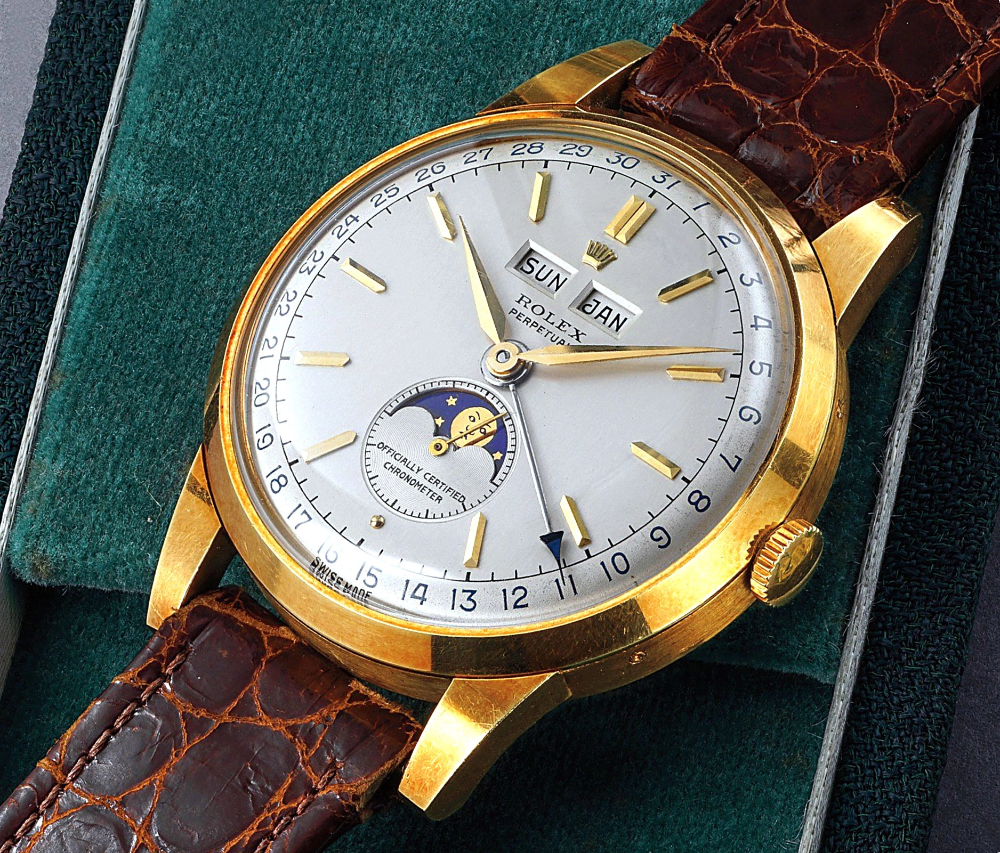
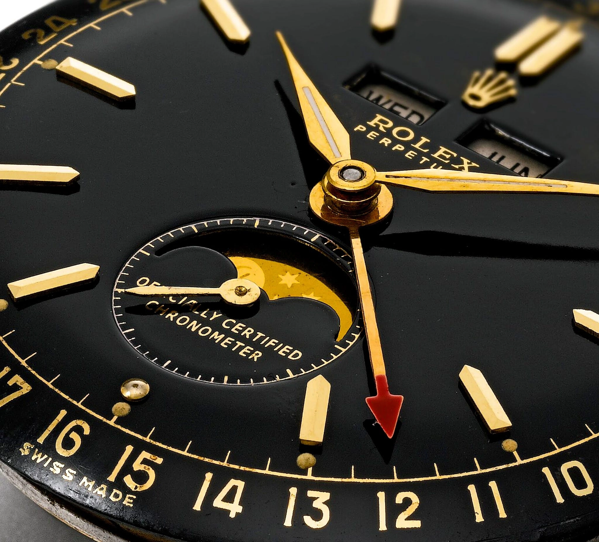

Rolex đã từng sản xuất đồng hồ Moonphase
Rolex chưa bao giờ nổi tiếng về những chiếc đồng hồ có độ phức tạp cao. Và vẫn thường có những cuộc tranh luận trên mạng xã hội rằng liệu Rolex có phải một nhà sản xuất đồng hồ thực thụ hay chỉ có thể sản xuất ra những model đơn giản. Sự thật là hiện tại danh tiếng của Rolex ngày nay đến từ những chiếc đồng hồ công cụ - những mẫu đồng hồ bằng thép được thèm muốn nhất trên thế giới. Tuy nhiên, trên thực tế trong quá khứ Rolex đã từng sản xuất ra những chiếc đồng hồ phức tạp. Giai đoạn được nhắc đến là vào giữa thế kỷ 20, hãng đã tạo ra hai mẫu Moonphase đặc biệt phức tạp.
Rolex Padellone 8171
Rolex Padellone cổ điển là một trong hai chiếc đồng hồ triple-date moonphase được Rolex sản xuất trong thế kỷ 20. Trên thực tế, Rolex 8171 được phát hành vào năm 1949, một năm trước khi giới thiệu mẫu Rolex “Stelline” ref. 6062.

Mặc dù chứa đựng bộ máy phức tạp bên trong, vẻ ngoài đồng hồ có tính thẩm mỹ cao. Ngoài viền của mặt số vòng đếm 31 ngày, được chỉ báo qua kim trung tâm. Ở vị trí 6 giờ, vòng tròn moonphase trong khi bên trên là ô cửa sổ báo thứ và tháng ở góc 12 giờ, ngay bên dưới biểu tượng Rolex rất cổ điển nếu so với vương miện hiện tại. Thực tế, có rất nhiều phiên bản mặt số của Padellone 8171 được cung cấp, điều này khiến đồng hồ được các nhà sưu tầm ráo riết tìm kiếm.
Bên trong đồng hồ là bộ máy A295 CPL, có 18 chân kính với lớp hoàn thiện bằng niken và dây tóc Breguet. Mặc dù không chắc chắn, nhưng ít hơn 1.000 chiếc được cho là đã được sản xuất; khiến cho chiếc đồng hồ này cực kỳ hiếm. Sản lượng thấp như này cũng là kết quả của việc đồng hồ chỉ được sản xuất trong một thời gian ngắn vài năm, cho đến khoảng năm 1952.

Tại buổi đấu giá Geneva của Phillips vào tháng 5 năm 2019, một chiếc Rolex Padellone 8171 cổ điển bằng vàng hồng 18K đã được bán với giá 980.000 CHF. Vài tháng sau, tại buổi đấu giá Geneva của Phillips vào tháng 11 năm 2019, một chiếc Rolex Padellone 8171 có ba lịch bằng thép không gỉ được bảo quản rất tốt đã được bán với giá 1.028.000 CHF. Bên trên là những chiếc Padellone đắt nhất được bán cho đến nay, tuy nhiên bạn vẫn có thể tìm được một số chiếc Rolex Padellone 8171 với giá dưới 100.000 USD.
Ngày nay, Rolex ref. 8171 là một trong những chiếc Rolex đáng mơ ước nhất. Do, không chỉ vì sự hiếm có của Padellone, mà còn vì sự phức tạp có một không hai. Những chiếc Rolex cổ điển này tiếp tục được các nhà sưu tập yêu thích trong các cuộc đấu giá.
Rolex “Stelline" ref. 6062

Cũng có chức năng triple-date kèm moonphase, Rolex “Stelline” ref. 6062 gần như được sản xuất cùng lúc với Rolex “Padellone” ref. 8171. Mẫu đồng hồ này được sản xuất từ năm 1950 đến 1954 nhưng Stelline vẫn nằm trong danh mục chính thức của Rolex ít nhất là cho đến năm 1958. Đây là một sự thật khá kỳ lạ bởi “Padellone” ref. 8171 là một mẫu moonphase đã có mặt trên thị trường kể từ năm 1949.
Rolex giới thiệu ref. 8171 vào năm 1949 có kích thước 38mm và không thấm nước. Sau đó chỉ một năm, vào năm 1950, Rolex đã phát hành ref. 6062 có kích thước 36mm mà đi kèm vỏ Oyster, chống thấm nước.
Rolex ref. 6062 là chiếc đồng hồ ba lịch tuần trăng thấm nước đầu tiên trên thế giới từng được sản xuất. Có tin rằng, chỉ có khoảng 350 đến 450 chiếc Rolex “Stelline” ref. 6062 được sản xuất, trong đó có lẽ là 350 chiếc bằng vàng vàng, 50 chiếc bằng vàng hồng và dưới 100 chiếc bằng thép không gỉ.